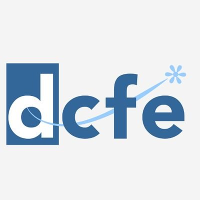
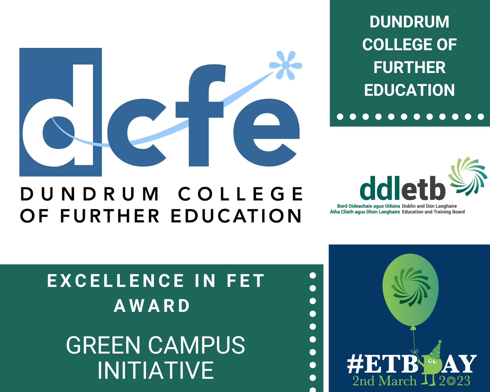

Dundrum College of Further Education is a PLC (Post Leaving Certificate) based school in Dublin. We have different courses for students that were not able to get a result in their living certificate so this can be a second option for them in order to get into a higher education which is the universities. Applying here actually will aid in unlocking their full potential in their chosen fields. Also our courses are made for students with ranges of age brackets.
Welcome to Dundrum College of Further Education, a PLC based and Further Education courses in Dublin. Our adaptable curriculum is made to unlock the potential of students of different age groups in order succeed as they move into higher education.
DCFE promotes lifelong learning chances for school leavers and others that want to educate across a diverse range of disciplines. We have the responsibilty of encouraging our students to use this opportunity in a good way to study abroad through our collaborations with different organizations throughout Europe. We have partners in Norway, Germany and France. Whether you are a school leaver, a mature learner, we are able to provide a wide range of vocational areas that will match your interests. Our courses give practical skills and knowledge and high level of competency. At DCFE, we're committed to providing a supportive and a calm environment that makes each student feel welcome in which our motivated support team is available to aid you in succeeding in your studies and also achieving your career goals. We offer full-time and part-time courses which include Business, Computing, Design, Horticulture, Science and much more.
We have some interesting details.>
With all these information, we hope you step into your future with one of our courses today. You can contact us if you want to know more about us.
 